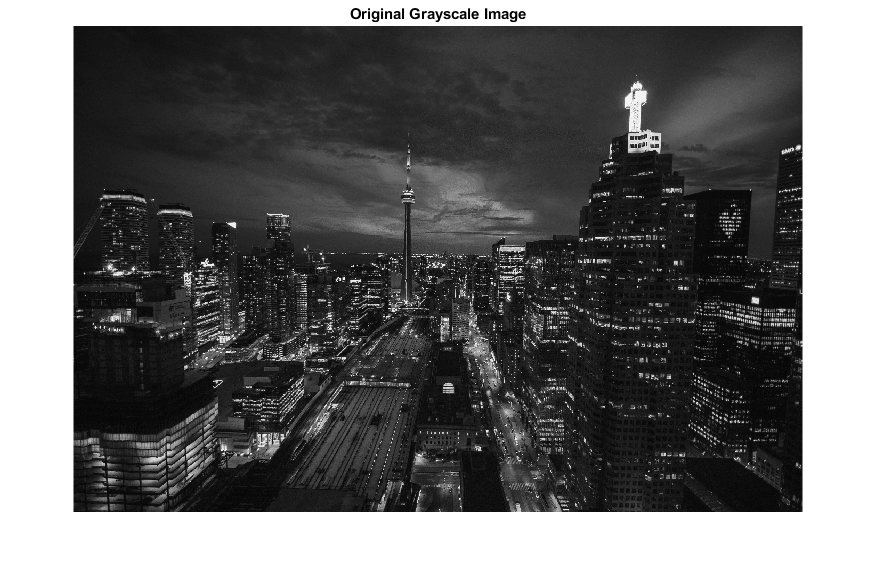
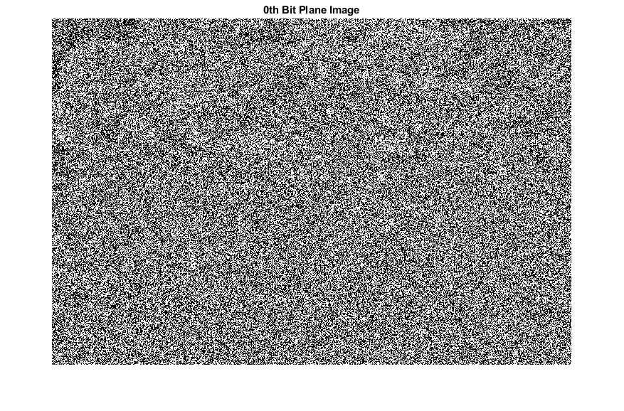
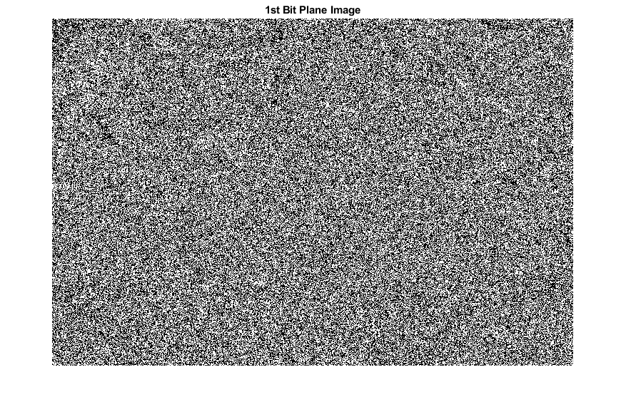
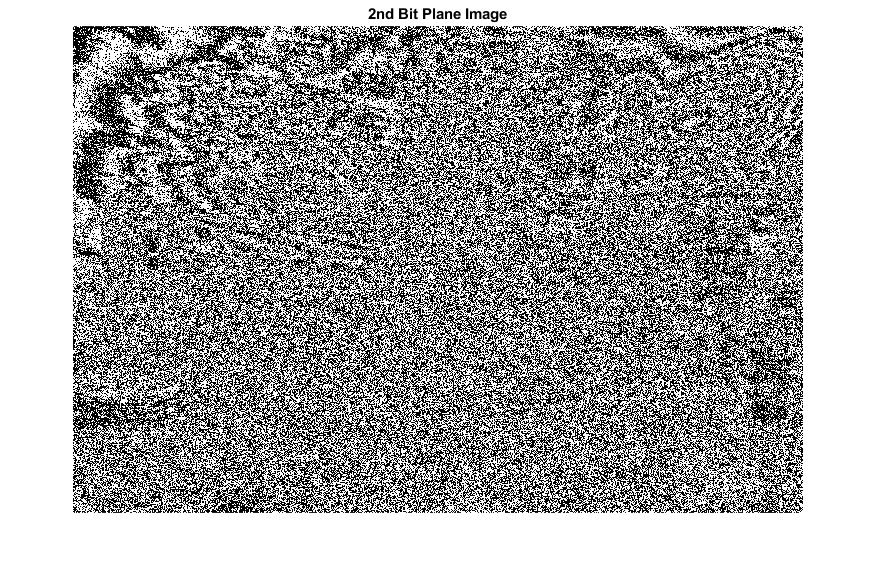
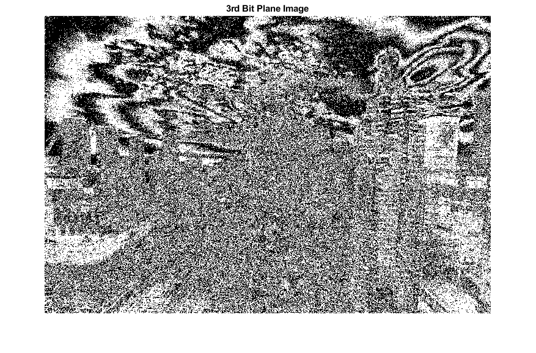
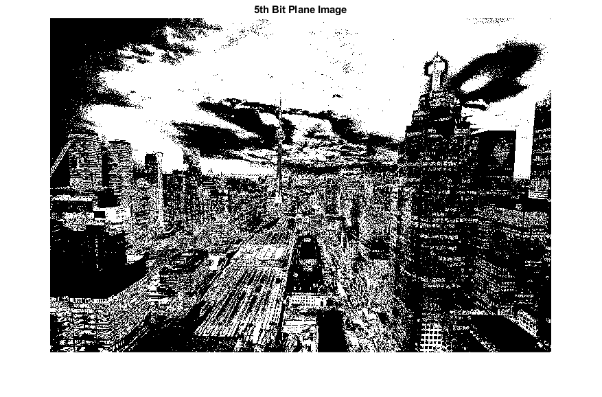
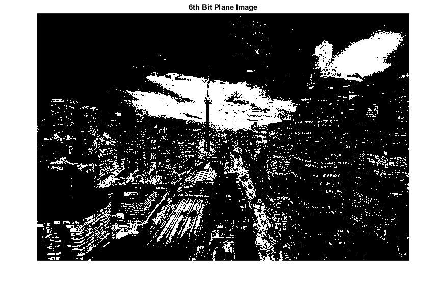
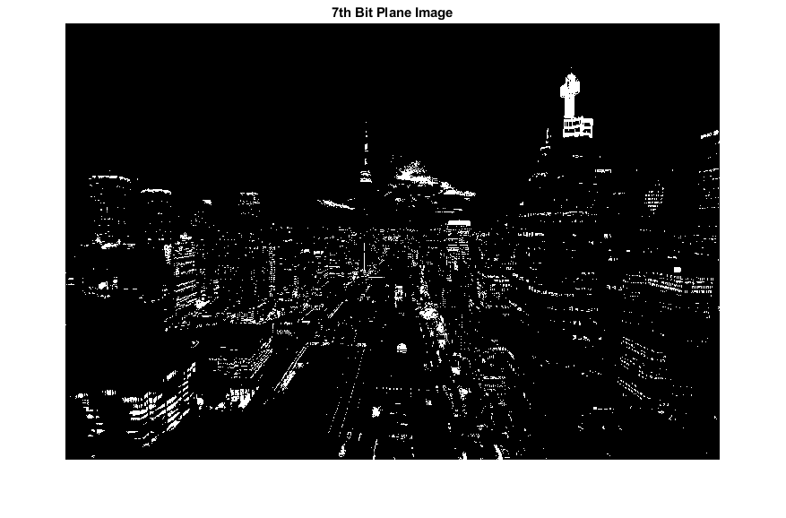
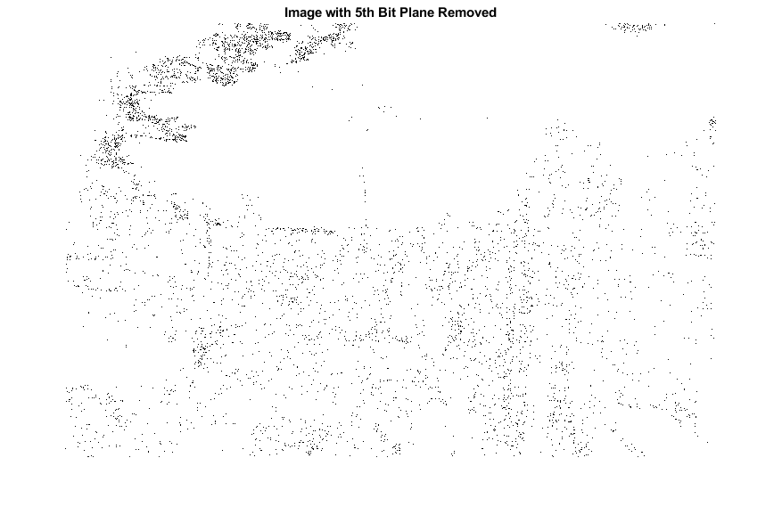
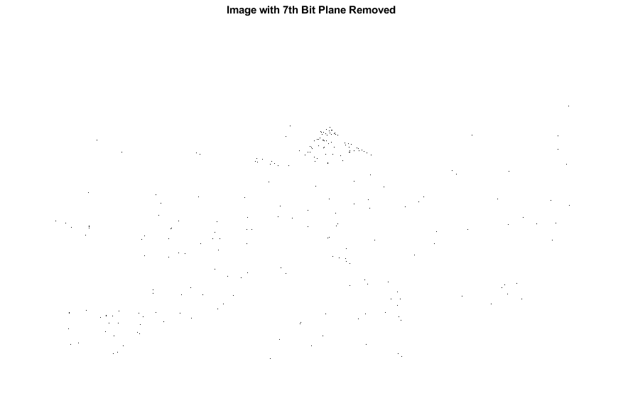

clc;
clear all;
close all;
I = rgb2gray(imread('C:\Users\Abhishek\Desktop\DIP\Bit_Slicing\Image.jpg'));
[m, n] = size(I);
figure;
imshow(I);
title('Original Grayscale Image');
Bitp0 = zeros(m,n);
Bitp1 = zeros(m,n);
Bitp2 = zeros(m,n);
Bitp3 = zeros(m,n);
Bitp4 = zeros(m,n);
Bitp5 = zeros(m,n);
Bitp6 = zeros(m,n);
Bitp7 = zeros(m,n);
for ii = 1:m
for jj = 1:n
Bitp0(ii,jj) = bitand(I(ii,jj), 1);
Bitp1(ii,jj) = bitand(I(ii,jj), 2);
Bitp2(ii,jj) = bitand(I(ii,jj), 4);
Bitp3(ii,jj) = bitand(I(ii,jj), 8);
Bitp4(ii,jj) = bitand(I(ii,jj), 16);
Bitp5(ii,jj) = bitand(I(ii,jj), 32);
Bitp6(ii,jj) = bitand(I(ii,jj), 64);
Bitp7(ii,jj) = bitand(I(ii,jj), 128);
end
end
figure; imshow(Bitp0); title('0th Bit Plane Image');
figure; imshow(Bitp1); title('1st Bit Plane Image');
figure; imshow(Bitp2); title('2nd Bit Plane Image');
figure; imshow(Bitp3); title('3rd Bit Plane Image');
figure; imshow(Bitp4); title('4th Bit Plane Image');
figure; imshow(Bitp5); title('5th Bit Plane Image');
figure; imshow(Bitp6); title('6th Bit Plane Image');
figure; imshow(Bitp7); title('7th Bit Plane Image');
bitpr0 = zeros(m,n);
bitpr5 = zeros(m,n);
bitpr7 = zeros(m,n);
for ii = 1:m
for jj = 1:n
bitpr0(ii,jj) = bitand(I(ii,jj), 255 - 2^0);
bitpr5(ii,jj) = bitand(I(ii,jj), 255 - 2^5);
bitpr7(ii,jj) = bitand(I(ii,jj), 255 - 2^7);
end
end
figure; imshow(bitpr0); title('Image with 0th Bit Plane Removed');
figure; imshow(bitpr5); title('Image with 5th Bit Plane Removed');
figure; imshow(bitpr7); title('Image with 7th Bit Plane Removed');
    

  

 